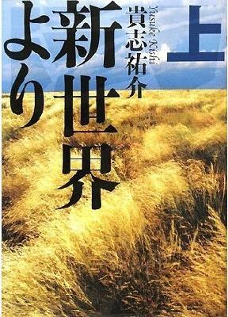

Kishi Yusuke · 2008
来自新世界 新世界より
From the New World — a novel of a thousand years after
一千年后的日本，人类用名为「咒力」的力量，重建了稻田、水车与神社。 村子干净、安静、秩序井然——干净到没有一个多余的孩子。

Scroll
From the New World — a novel of a thousand years after
一千年后的日本，人类用名为「咒力」的力量，重建了稻田、水车与神社。 村子干净、安静、秩序井然——干净到没有一个多余的孩子。



故事从「我」写给一千年后某个人的信开始。写信的人叫渡边早季， 二十六岁，是神栖六十六町的一名普通居民。她回忆的，是十四年前那个夏天之后， 五个孩子怎样一个接一个地从这座村庄里消失。
公元两千多年，人类中的一部分觉醒了咒力——用意念移动物体、点燃空气、 改写生物的形态。文明在血里崩塌又重建，最终形成了一种奇特的平衡：没有机器，没有城市， 没有远方的战争，人们穿着和服住在上千人的小町里，用咒力耕田、造桥、点火， 过着看起来像江户时代的农业生活。
代价是：他们必须保证再也没有人用咒力杀人。于是这个社会发明了 攻击抑制、愧死机构、八丁标、完人学校，和一套温柔到几乎看不见的淘汰机制。 在这样一座「完美」的村庄里长大，早季和她的四个同学，慢慢发现了一件事—— 不听话的孩子，是不会长大的。
想象力，能改变一切。—— 全书最后一行